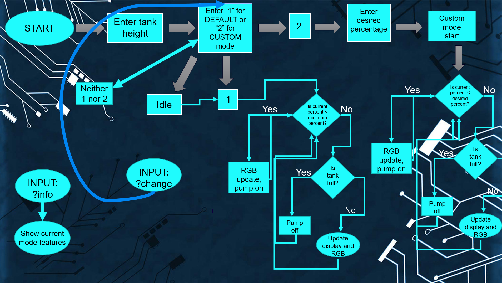
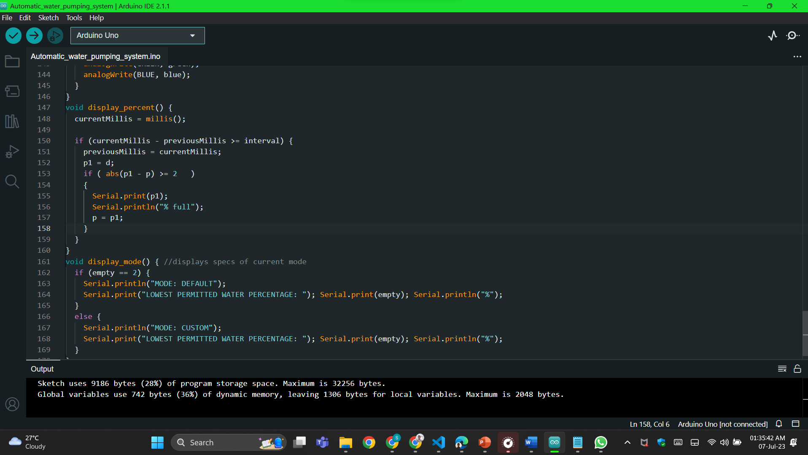
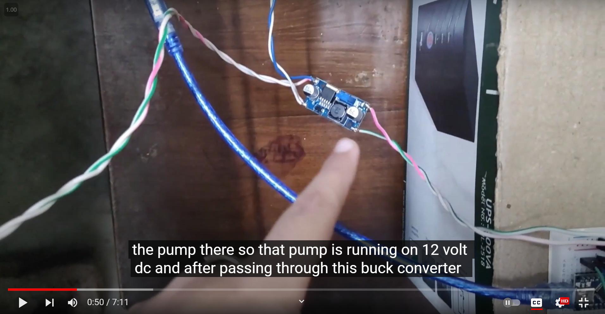
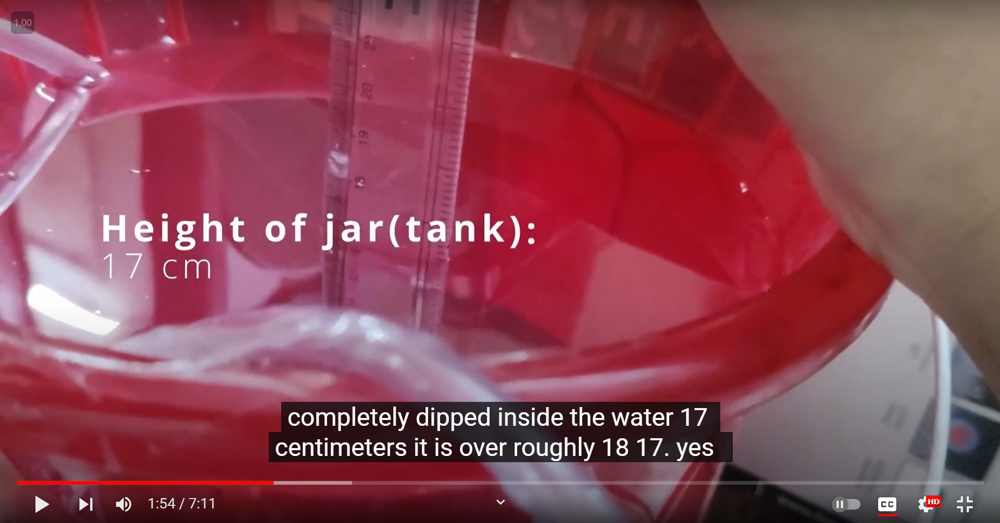
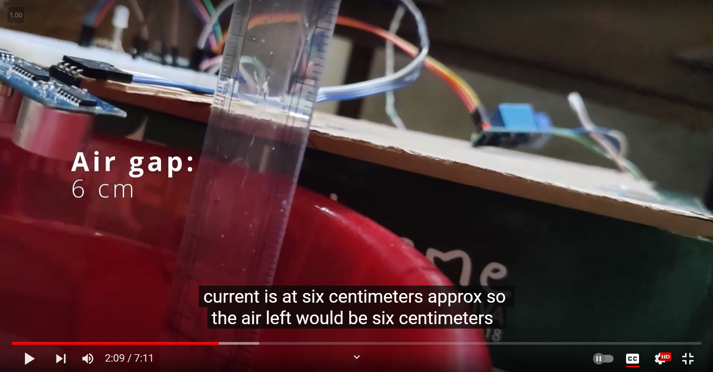
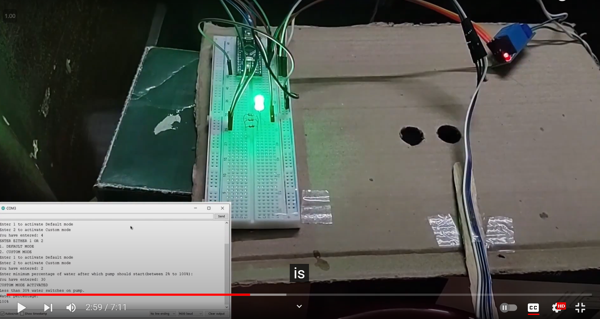
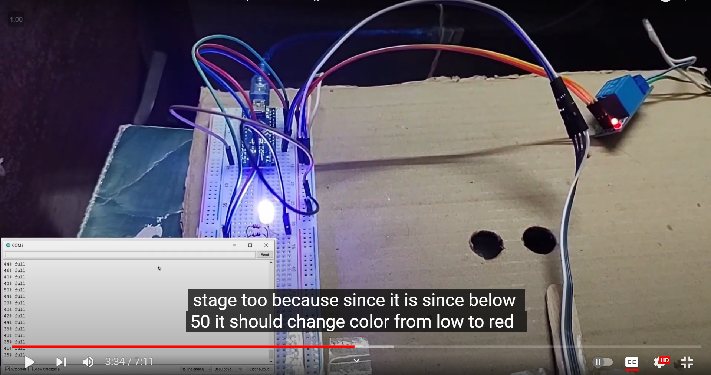

Documentation of the Project [DIY Coursework Project ]
Objective- To Create an automated Water Pumping system using an ultrasonic sensor
(software and Hardware)
Skills Required(software)
- Good Knowledge of C language and Arduino sketch to write code
- Familiar with Tinker Cad workspace
- Knowledge of Circuits and components
- Familiar with Arduino IDE
- Familiar with MS Office for documentation work
- HTML and CSS, Git to create UI
Materials Required(Hardware)
- PC required
- A bucket for prototyping as a tank
- Arduino Nano R3 Atmega328 (Pin Soldered)-Rs375.25
- R365 6-12V DC Diaphragm-based water pump-Rs141.55
- 12V 2 Amp power supply board 220V AC to 12V DC-Rs99.75
- LM2596 DC-DC buck converter adjustable step-down module-Rs56.05
- RGB LED Common Cathode 4 Pin (5mm)-Rs9.97
- Breadboard 830 points for solderless prototyping-Rs65.55
- 1 Channel 5V relay module-Rs46.55
- Ultrasonic sensor module HCSR04-Rs66.50
- Jumper wire (male to male)-Rs52.26
- Jumper wire (male to female)-Rs52.25
- Total-Rs1025.68

How does it work?
- Whole system works on two independent modes, MODE 1: Default Mode and MODE 2: Custom Mode
- 
- Default Mode- In this method, the pump would turn on automatically if the bucket(tank) water level falls under 2% of the tank's total capacity, i.e., roughly when the tank is empty.

- Custom Mode- In this mode, the user would be prompted to enter the minimum water level in the tank, after which they want to turn on the pump. For example, suppose the jar(tank) height is 30cm, and the user does not want the water level to fall under 10cm. In that case, the user would input 10 in the prompt, and accordingly, the Custom lower threshold mode would get activated.

- Also, irrespective of the mode in which the setup is configured, the pump would turn off when the jar(tank) gets filled.
Source Code


This Code is an Arduino sketch written in the C programming language. It controls a water level monitoring system using an ultrasonic sensor and an RGB LED. Here's a breakdown of the code:
- Libraries and Definitions: The necessary libraries are included, and some constants and pin assignments are defined.
- Variable Declarations: Various variables are declared, including the jar height, empty percentage, and timing variables.
- Setup Function: The setup function is executed once the Arduino board starts. It initializes the serial communication, sets pin modes, and prompts the user to enter the jar's height. It also sets the initial state of the pump and displays the initial water level percentage.
- Loop Function: After the setup function, the loop function is repeated. It continuously checks for serial input from the user and performs different actions based on the received commands. It also monitors the water level using the ultrasonic sensor and adjusts the pump, and RGB LED accordingly.
- Helper Functions: Several helper functions are defined, such as tell_percent (calculates the water level percentage based on the distance measured by the ultrasonic sensor), check_empty (checks if the water level is below the empty threshold), ask_mode (prompts the user to select a mode: default or custom), set_colour (sets the color of the RGB LED based on the water level percentage), display_percent (displays the water level percentage at regular intervals), and display_mode (displays the current mode and its specifications).
Overall, this code allows the user to monitor the water level in a jar or tank and control a pump based on the specified water level thresholds. It also provides visual feedback using an RGB LED.
Code Successfully Compiled.
    